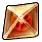
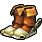

Now that Link had conquered the Temples of Forest, Fire, and Water, it wasn't obvious on where to go next. So Link began to explore, going back to Kakariko Village only to see it on fire and Shiek standing in front of the village's well. A dark shadowy spirit shot out from the well in from of Shiek before turning to Link and flying at him causing Link to black out, after being awakened by Shiek, he teaches Link the Nocturne of Shadow to find the source of the evil spirit, the town no longer burning due to the rain. There was no obvious way to get to this temple unlike before, playing the song on his ocarina Link was able to warp directly to the temple's entrance on a fenced overhang above the graveyard. He then made his way inside of the Shadow Temple, only to find that he could not procede further without lighting all of the torches that surrounded a pedastal. Without an answer he began to search, eventually making his way back to the Temple of Time and realizing he could put the Master Sword back into the pedestal. When he did, he woke back up seven years before in the Temple of Time, everything the same as how he had left it. Going back to Hyrule Castle he is able to see a rock that he could blow up with a bomb from his bomb bag, upon doing so he revealed the entrance to a Great Fairy's fountain, inside he is gifted the power of Din's Fire. Link decided to check the well that resided in Kakariko Village to see what lied in it seven years ago to cause the evil spirit to emerge from it, though it was full of water. He stepped inside of the windmill in the village which drew water from the well to talk to the operator, but nothing came of it. He decided to try this in the future, only for the same operator to teach Link the Song of Storms. With this new song, Link went back to the past to play it in the windmill to drain out the water from the well. Inside this well was a dungeon of the undead, with it being on the smaller side he was able to complete it quickly, gaining an item named the Lens of Truth. Putting it up to his face, he was able to see things that couldn't be seen by the normal eye. Once Link made it back to the Shadow Temple after removing the Master Sword from the pedestal again, he used Din's Fire to light all of the torches and open the door to the Shadow Temple, a temple connecting this world to the next. Passing through various blades and spikes while avoiding large pitfalls, Link was able to reach a ship that was on the inside of the temple. In this ship ride he had to face off against two fearsome foe before the ship completely sank. Once past this he fell down into a room where it seemed the floor was a giant drum. Then what appeared above him was the body of a giant with a decapitated head, an eye where the spine should be and two giant floating hands, Bongo Bongo. His defeat was one of Link's greatest accomplishments as he had to use several different items while having to deal with his attacks on a non-solid floor. He soon awoke the Sage of Shadow, Impa, and was given the Shadow Medallion. There were now only two sages left.
| PICTURE | NAME | DESCRIPTION |
|---|---|---|
|
Lens of Truth | A third eye |
|  | Din's Fire | A fireball that surrounds Link |
|  | Hover Boots | Makes Link really light |
| Shadow Medallion | Given by Impa |